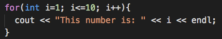
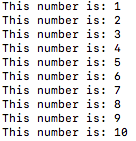
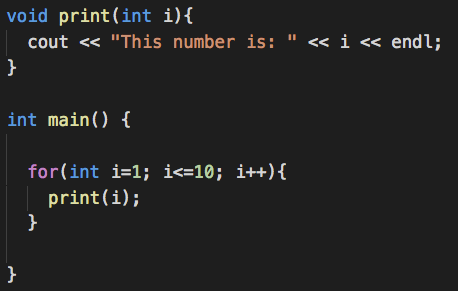
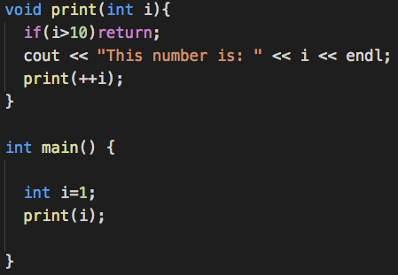

Recursion
A recursive function is a function that calls itself. You can use recursion to break a problem down into smaller parts. Each part can be broken down again until you reach the smallest version of the problem, known as the base case. Any problem that can be solved using a loop can also be solved using recursion.
Loop vs Recursion
When we talk about recursion, we are just talking about a loop in a different way. Take for example this loop:
This function runs the same code over and over again as long as the condition is met. The conditions in this case is that as long as i is less than or equal to 10, the code within the loop is executed. Remember that a for-loop has a counter implemented in the loop. Our counter here is i, it is starting from 1 and we want it to stop at 10. The code that is executed for each iteration of the loop is a basic cout statement that prints the number out.
We expect the following output:
We can rewrite this loop with the using a function call:
This loop is almost the same as the previous loop with the exception that a function is called to do the printing. The counter, condition, and incrementing is the same. Now instead of leaving the responsiblity of running the print code to a function, in otherwords we outsourced the job to someone else.
It will have the exact same result.
Now this is a recursive call of the same program/function
Now recursion is a almost entirely different. The way loops work is that at the end of each iteration, it JUMPS back up to the top of the loop and checks for a condition and then either executed the loop again or move on. In recursion, there is no jumping up; instead, it repeats its code by call itself.